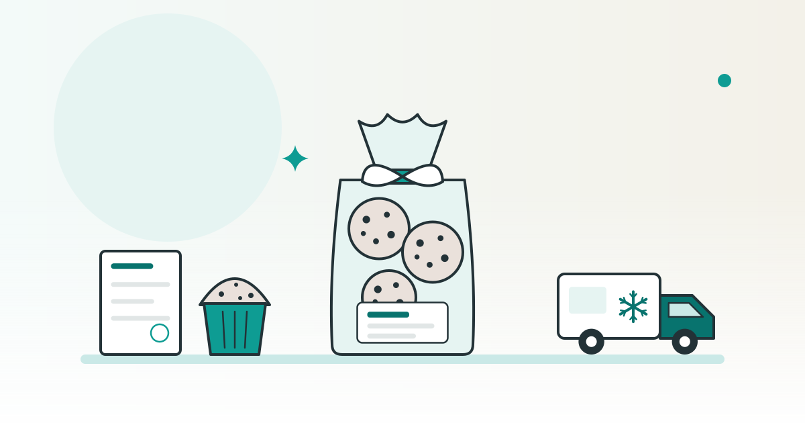

SHOPKIT コラム
お菓子・焼き菓子をネットで売るには営業許可・表示・配送

自分で焼いたお菓子を、ネットで届けたい。そう考えたら、商品ページを作る前に、作る場所・包みに載せる情報・送り方をそろえましょう。焼き菓子のネットショップの開業に向けて、相談する順番と用意する資料を整理します。
この記事は、完成品のネットショップを販売している SHOPKIT が書いています。
お菓子を作って売る形と、仕入れて売る形を分ける
最初に、誰がどこでお菓子を作り、どの状態でお客様へ送るのかを書き出します。自分で製造する場合、作ってもらう場合、包装された商品を仕入れる場合を分けましょう。仕入れた後に袋を開けて詰め直す予定も、相談時に伝えます。
厚生労働省の営業許可業種の解説には、菓子の完成品を製造する「菓子製造業」が載っています。パンやあん類も含みますが、複合型の営業として扱う区分は除かれます。お菓子をネットで売るという情報だけで、必要な許可の種類は決められません。
出典：厚生労働省営業許可業種の解説の菓子製造業。制度全体は営業規制に関する情報をご覧ください。
製造・販売・小分けの予定を保健所へ伝え、許可や届出の扱いを確かめてから準備を進めます。食品のネットショップでは、売る画面に加え、食品を扱う場所と工程の確認も予定に入れましょう。
関連：在宅で起業するのに資格は要る？許可・届出が要る商品も確認
作る場所を決める前に、管轄の保健所へ相談する
厚生労働省は、営業許可申請や届出で選ぶ業種、記載内容などの相談先を、管轄の保健所と案内しています。作る場所や販売の形が分かる資料を用意して、必要な手続きを窓口で確かめましょう。
出典：厚生労働省食品衛生申請等システムの重要なお知らせ。
相談用のメモには、次の内容をまとめると、予定を具体的に説明できます。
- 作りたいお菓子と、その原材料・製造の流れ。
- 作る場所の住所、部屋や設備の配置、ほかの用途で使う予定。
- 材料と完成品の置き場所、包装する場所、保管や配送の予定。
- 自分で作る範囲と、ほかの製造者に依頼する範囲。
自宅や借りる調理場を使いたい場合も、その場所と使い方を伝えて相談します。食品衛生責任者や衛生管理の計画・記録についても、必要な準備を窓口で確認しましょう。設備を買う前に、相談の回答と、まだ決まっていない点をメモに残します。
容器包装の表示と、商品ページの案内をそろえる
消費者庁は、容器包装に入れた加工食品には、食品表示のルールがあると案内しています。食品ごとの表示内容や方法には違いがあります。表示を作る際は、消費者庁の資料と食品表示の相談窓口で、自分の商品に必要な項目を確かめましょう。
出典：消費者庁食品を安心して選ぶために、食品表示。
確認用の一覧には、名称、原材料・添加物、内容量、期限、保存方法、表示に責任を持つ事業者、製造場所、栄養成分、原料原産地などの欄を用意します。これは相談と照合のための一覧です。必要な項目や省略できる条件は、商品の種類と販売の形を伝えて確認します。
ネットの商品ページでは、原材料や保存方法を買う前に読める場所へまとめましょう。包みの表示を撮影して載せる場合も、小さい文字を読めるか確かめます。材料や配合を変えたら、包みと商品ページの両方を照らし直します。
消費者庁のネット販売のガイドブックは、食品表示基準が対象とする容器包装の表示と、販売画面での情報提供を分けて説明しています。販売画面の案内を充実させるための参考資料として使い、包みに必要な表示と混同しないようにしましょう。
出典：消費者庁食品のネット販売の情報提供ガイドブックの位置付け・食品表示基準。食品表示の相談先は、消費者庁の食品表示ページから確かめられます。
日持ちの根拠を確かめ、保存条件に合う配送を組む
消費者庁は、食品の期限には科学的・合理的な根拠が必要と説明しています。ほかのお店の焼き菓子と見た目が似ているという理由で、期限を決めないようにしましょう。製造条件や包装、保存方法を整理して、期限の設定方法を関係窓口へ相談します。
出典：消費者庁食品の期限表示に関する情報。
配送を検討するときは、製品について確かめた保存条件を先に置きます。その条件で運べるか、配送会社へ取扱い条件を確認しましょう。常温・冷蔵・冷凍のどれを使うかを、焼き菓子という呼び名だけで決めないことが大切です。
製造してから送るまでの保管、配送中、受け取った後をつなげて考えます。発送できる日、届け先、受け取れなかった場合の扱いを決め、予定どおりに届けにくい地域や日程を受け付けるかも確認します。
商品ページで日持ちを案内する際は、製造日からの期間なのか、届いてから残る期間なのかを分かるようにします。注文を受ける時点の案内と、実際に送る商品の期限が合うかも確かめましょう。
ネット販売のガイドブックでは、期限の伝え方を分け、届く商品と案内のずれを防ぐ考え方を示しています。具体的な日数や温度は、商品の根拠と配送条件を確認して決めます。
関連：ネットショップの送料の決め方｜発送方法・梱包と先に伝えること
アレルギーの情報は、原材料の資料から確かめる
消費者庁は、容器包装された加工食品に特定原材料が含まれる場合、その旨の表示を義務付ける制度を案内しています。対象品目や表示方法は、最新の消費者庁の資料と相談窓口で確認しましょう。
出典：消費者庁食物アレルギー表示に関する情報。古いネット記事の品目一覧だけで表示を作らないようにします。
仕入れた材料の表示や規格の資料を、商品ごとの配合表と合わせて確認します。チョコレートや飾りなど、組み合わせた材料の中身も調べましょう。材料を別の品へ替えた場合は、同じ商品名でも情報を照合し直します。
問い合わせへの回答は、確認できた原材料や製造工程の情報を基にします。使用する材料に含まれるかという話と、同じ設備で別の材料を扱うかという話を分けて記録しましょう。分からない点は製造者へ確認し、その人が食べられるかをお店で判断しないようにします。
問い合わせの受け方は、商品名と確認した資料を結び付けて残す形にしておくと、次の確認につなげられます。
食品では、作る工程と届いた後の扱いまで準備する
雑貨や服のお店と共通するのは、写真、説明文、注文を受ける画面などの準備です。お菓子では、その準備に製造場所の確認、食品表示、期限と保存条件を合わせて進めましょう。
販売開始前のメモは、保健所への相談、商品ごとの表示、配送条件を並べて作ります。回答を得た日と資料の名前を残し、材料や作る場所、送り方を変えたときに見返せるようにします。食品を扱う準備と、お店の画面づくりを、それぞれ確かめてから注文を受ける形に整えましょう。
関連：ネットショップ開業に必要なもの・手続きは？始める前に用意する物の一覧
よくある質問
菓子の許可の相談先は？
製造や販売を予定している場所の管轄の保健所へ、商品と作業内容を伝えて相談します。作る形と仕入れて売る形、小分けする予定を分けて説明しましょう。
菓子の日持ちはどう決める？
見た目が似た商品の日数を使わず、製造条件、包装、保存方法を整理して、根拠を確かめます。期限の設定方法は関係窓口へ相談しましょう。
菓子のアレルギー表示は、何を基に確かめますか？
原材料の資料と配合表を照らし、最新の消費者庁の資料で対象品目や表示方法を確認します。分からない材料や工程の情報は、製造者や相談窓口へ確かめます。
※ 公的資料は2026年10月28日に確認しました。許可・届出・表示は、製造場所や商品、販売の形を伝えて窓口で確かめてください。制度や手続きの最新情報は、厚生労働省・消費者庁の公式資料でご確認ください。